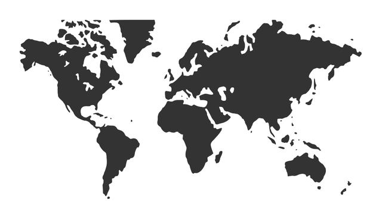

<ion-header>
  <ion-toolbar color="primary">
    <ion-buttons slot="start">
      <ion-menu-button></ion-menu-button>
    </ion-buttons>

    <ion-title class="ion-text-center">
      <ion-icon class="icon" name="heart" size="large"> </ion-icon>
    </ion-title>

    <ion-buttons slot="end">
      <ion-button (click)="presentPopover($event)">
        <ion-icon class="popover-icon" slot="icon-only" name="ellipsis-vertical-outline"></ion-icon>
      </ion-button>
    </ion-buttons>
  </ion-toolbar>
</ion-header>

<ion-content>
  <ion-grid class="ion-no-padding">
    <ion-row>
      <ion-col
        size="12"
        size-sm="8"
        size-ms="8"
        size-xl="6"
        offset-sm="2"
        class="ion-no-padding"
      >
        <!--ion-card displays if no favourites-->
        <ion-card *ngIf="countryList.length === 0">
          <div class="image-div">
            
            <div class="photo-credit">{{ 'FAVOURITES.photo-credit' | translate }}</div>
          </div>

          <ion-card-content>
            <h2 class="ion-text-center">
              {{ 'FAVOURITES.notice' | translate }}
            </h2>
          </ion-card-content>
        </ion-card>

        <!--list of news articles with rhs slide to delete from favourites-->
        <!-- <div  class="" color="secondary" >
					<ion-list>
						<ion-item-sliding style="padding: 0;"
							router-direction="forward" #slidingItem>
							<app-country-item></app-country-item>
							<ion-item-options>
								<ion-item-option
									color="danger"
									(click)="onRemoveFavourite()">
									<ion-icon name="heart-dislike" slot="icon-only"></ion-icon>
								</ion-item-option>
							</ion-item-options>
						</ion-item-sliding>
					</ion-list>
				</div> -->
      </ion-col>
    </ion-row>
  </ion-grid>
</ion-content>
